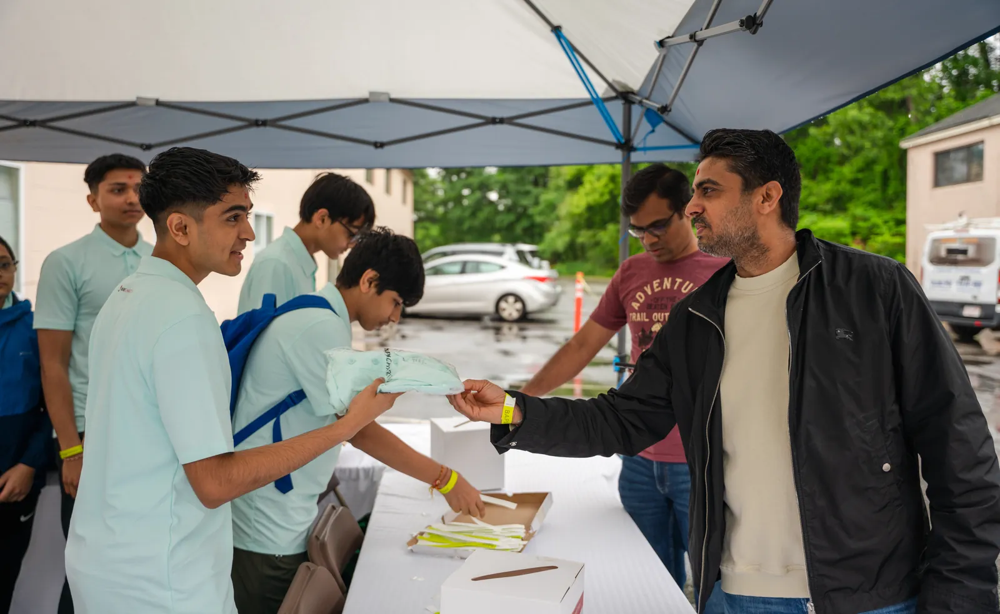

Experience
Most of my time outside class goes to BAPS, a Hindu organization, and the BAPS Swaminarayan Mandir in Lowell. I have volunteered with BAPS Charities since 2017. Since 2022 I have worked with the children's program at our mandir, first as a teacher and now as its coordinator. In 2023 I did CNC fabrication at BAPS Akshardham in New Jersey, full time over the summer and then on weekends once school started.
Youth leadership
Youth Activities Coordinator, BAPS Bal Mandal
Lowell, MA · Teacher from August 2022, coordinator since 2024
I started in Bal Mandal, the children's program at the BAPS Swaminarayan Mandir in Lowell, as a teacher in August 2022. In 2024 I became the Youth Activities Coordinator, and now I lead the 15 peer teachers, the parent coordinators, and the other teams that work with Bal Mandal.
Before each weekly assembly I run a planning meeting where I assign lessons to the teachers and go over upcoming events. After the assembly we meet again to talk about what went well and what to change next time. I also train new peer teachers, and I still teach lessons myself to the more than 70 kids who come each week.

Photo to come: running the weekly planning meeting or the debrief with the peer teachers.
Bal Balika Summer Shibir
The Bal Balika Summer Shibir is a three-day camp for children in grades 4 through 8. It teaches values through activities, stage programs, and breakout sessions, and each one has more than 1,000 participants. In 2023, 2024, and 2025 I helped put on the stage programs for the whole camp. In 2026 I ran a smaller shibir.

Photo to come: on stage or backstage running a shibir program.
Kids Diwali Celebration
Every year 400 to 500 children come to our mandir for the Kids Diwali Celebration: a stage program, activities, food, prizes, and arcade-style games built around Diwali. I handled the logistics in 2023, 2024, and 2025. That meant being the link between the departments, including food, games, prizes, program, and the audiovisual team, so each one knew what the others needed and when. I plan to do it again in 2026.


National youth convention, 2027
I am preparing to help run a national BAPS youth convention in 2027. More than 10,000 young people are expected.
Fabrication
Full-Time Volunteer, BAPS Akshardham
Robbinsville, NJ · July 2023 to October 2023
In the summer of 2023 I worked full time in the digital fabrication shop at BAPS Akshardham in Robbinsville, New Jersey. I was there seven days a week, usually for eight hours a day or more. When 9th grade started in September I switched to weekends: I traveled down Friday night, worked Saturday and Sunday, and came home Sunday night. During the week I kept up with my schoolwork.
The shop made the ornamental parts for a large cultural building. I drew components in CorelDRAW and Adobe Illustrator and turned the drawings into CNC files. Then I ran the industrial CNC routers and hot-wire cutters that cut them out. Most of my pieces were detailed foam designs, cut from styrofoam and rigid foam insulation board. I also made parts in wood and PVC.
The senior designers taught me to run the design programs and the machines. From them I learned the basics of drawing a part so a machine can actually cut it, and how a piece gets from a drawing to a finished part. They also pushed me to be more creative with my own designs. Being in that shop, I saw how a project that large is organized so every piece comes together on time.


Photo to come: at a CNC router or hot-wire cutter, or with a finished piece.
Community service
Volunteer, BAPS Charities
Lowell, MA · June 2017 to present
The biggest BAPS Charities event in Lowell is the annual Walk-Run, a walkathon that raises money for a different cause each time. I help run it every year, and I raise thousands of dollars in pledges for it myself. Recent walks have supported The Nature Conservancy, breast cancer awareness, the Lowell Police and Tyngsboro Fire departments, and Tyngsboro Public Schools. The 2025 walk had more than 650 participants.
The rest of the year I help with community cleanups, food drives, and health awareness events, usually with setup, check-in, and directing crowds. I also encourage other people in the community to get involved.


Photo to come: at the Walk-Run, running check-in or the course.
Work
Email Marketing Associate, ALPHAPEP LLC
Lowell, MA · May 2026 to present
I design targeted marketing emails for the company's products and send them out. I also manage the outgoing campaigns, so each one reaches customers on schedule.
School
Chelmsford High School.
Vice President, Artificial Intelligence Club
September 2025 to present
I lead the club's discussions about new AI tools and how people use them in the real world. With other members I also build hands-on projects that use AI for everyday problems.
Student Athlete, Track and Field
November 2023 to present
I compete in the high jump, the 55m hurdles, and the 110m hurdles in both the indoor and outdoor seasons. We practice every day and have meets on weekends.
National Honor Society · Inducted March 2026
Robotics Club · September 2023 to June 2024
I was on a team that designed, built, and tested robots for VEX Robotics competitions.